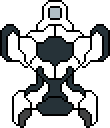

Movimiento
El movimiento de la nave es controlado usando las teclas WASD.
La rotación es controlada por la dirección en la que se encuentra el puntero.
Salud
Cada nave tiene dos parametros de salud: Puntos de Casco y Puntos de Escudo.
Los puntos de escudo se regeneran automaticamente, y son los primeros que reciben daño. Si se recibe daño y no se tienen puntos de escudo, los puntos de casco disminuyen. Si pierdes todos los puntos de casco la partida terminará.
Las barras de la parte superior de la pantalla indican la cantidad de puntos de casco (barra roja) y escudo (barra azul)
Habilidades
Cada nave tiene dos habilidades. Estas son activadas usando los botones del mouse.
Las habilidades solo pueden ser activadas cada cierto tiempo, este tiempo esta representado con las barras blancas a los laterales de las barras de salud.
Explorador
Nave ligera de gran maniobrabilidad, cuenta con poca armadura y escudos débiles que se recargan rápidamente.
| Puntos de Armadura: | 50 |
|---|---|
| Puntos de Escudo: | 100 |
| Tiempo de recarga de escudo: | 4 seg |
| Velocidad de recarga de escudo: | 20 pts/seg |
| Velocidad de movimiento: | 140 u |
Interceptor

Nave mediana con maniobrabilidad estándar, cuenta con armadura decente y escudos normales con una velocidad de recarga normal.
| Puntos de Armadura: | 100 |
|---|---|
| Puntos de Escudo: | 150 |
| Tiempo de recarga de escudo: | 6 seg |
| Velocidad de recarga de escudo: | 15 pts/seg |
| Velocidad de movimiento: | 100 u |
Transportador
Nave de gran tamaño con poca maniobrabilidad, cuenta con una gran cantidad de armadura y escudos fuertes que se recargan lentamente.
| Puntos de Armadura: | 150 |
|---|---|
| Puntos de Escudo: | 200 |
| Tiempo de recarga de escudo: | 8 seg |
| Velocidad de recarga de escudo: | 10 pts/seg |
| Velocidad de movimiento: | 60 u |